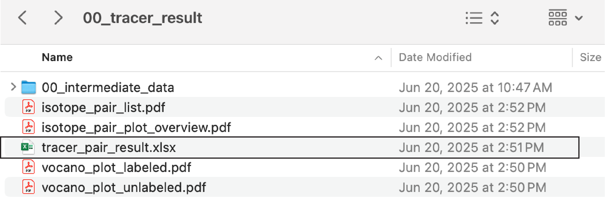

# intall public packages
if (!require(devtools)){
install.packages("devtools")
}
if (!require(BiocManager)){
install.packages("BiocManager")
}
# Required packages
required_pkgs <- c("dplyr","tidyr","readr", "stringr", "tibble", "purrr",
"ggplot2", "igraph", "pbapply", "Rdisop", "randomForest", "pryr",
"magrittr", "rmarkdown", "caret", "writexl", "ggrepel", "crayon",
"data.table", "mzR", "Rdisop", "grid", "gridExtra", "RaMS", "knitr",
"rcdk")
BiocManager::install(required_pkgs)
devtools::install_github("JustinZZW/SpectraTools2")
devtools::install_github("DoddLab/MassToolsMjhelf")
# install.packages("IsoPairFinder")
devtools::install_github("DoddLab/IsoPairFinder")1 Quick Start
1.1 Installation
To install the IsoPairFinder package, you can use the following command in R:
1.2 Demo data
The demo data belong to the uric acid catabolism pathway study1. Briefly, we cultured wild-type and mutant strains (hyuA mutant in the demo data) of C. sporogenes in the presence of either unlabeled uric acid or its [13C5]-labeled isotopolog (detailed study design can be found sec-case-study).
The demo data can be downloaded here. The downloaded data contains below files (Figure fig-figure1-1). Please refer to sec-data-preparation for the detailed requirements of the data format for the step-by-step data preparation (xcms - sec-xcms, msdial - sec-msdial, mzmine - sec-mzmine).
1.3 Run script
The basic use of IsoPairFinder is simply running the R script as below:
# run the IsoPairFinder workflow
library(tidyverse)
library(IsoPairFinder)
# analysis of HyuA
find_intemidates(peak_table_unlabel = 'peak_table_C12.csv',
peak_table_label = 'peak_table_C13.csv',
sample_info = 'sample_info.csv',
path = '~/Project/00_Uric_Acid_project/Data/20250606_isopairfind_test/Demo_data_msdial/',
polarity = 'positive',
control_group = c("WT"),
case_group = c('hyuA'),
mz_tol = 10,
rt_tol = 0.05,
p_value_cutoff = 0.05,
p_adjust = TRUE,
fold_change_cutoff = 20,
is_recognize_adducts = TRUE)Please refer to sec-isoPairFinder-parameters for the explains of parameters.
1.4 Output
After running, a new folder “00_tracer_result” will be created. It contains several files, including “tracer_pair_result.xlsx” and several PDF files. In the tab of the XLSX file, we could find the identified ion pair results between the unlabeled and labeled groups (Figure fig-figure1-2). The detailed explanations of each file can be found in sec-isoPairFinder-output.

1.
Liu, Y. et al. A widely distributed gene cluster compensates for uricase loss in hominids. Cell 186, 3400–3413.e20 (2023).